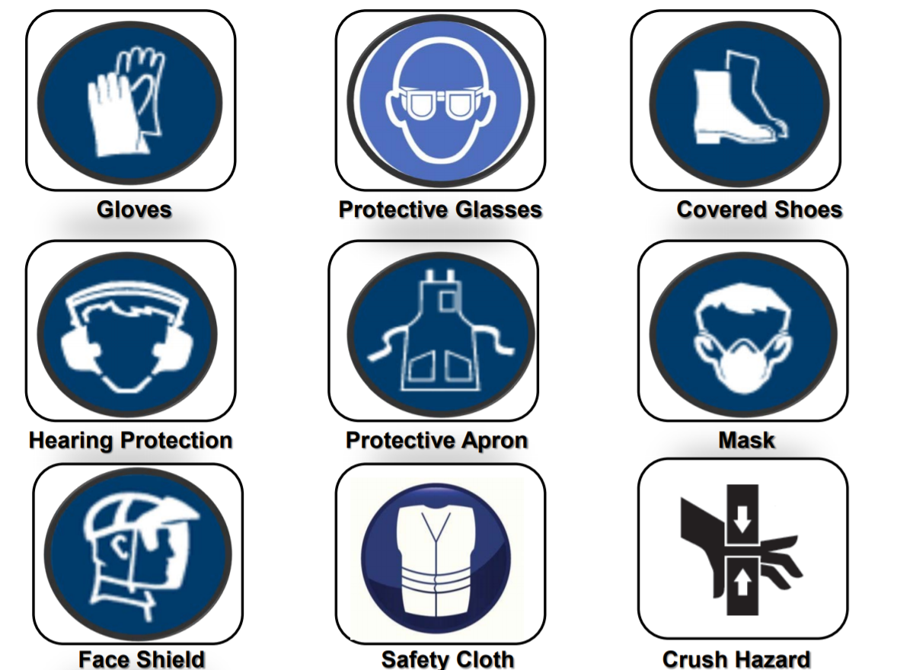
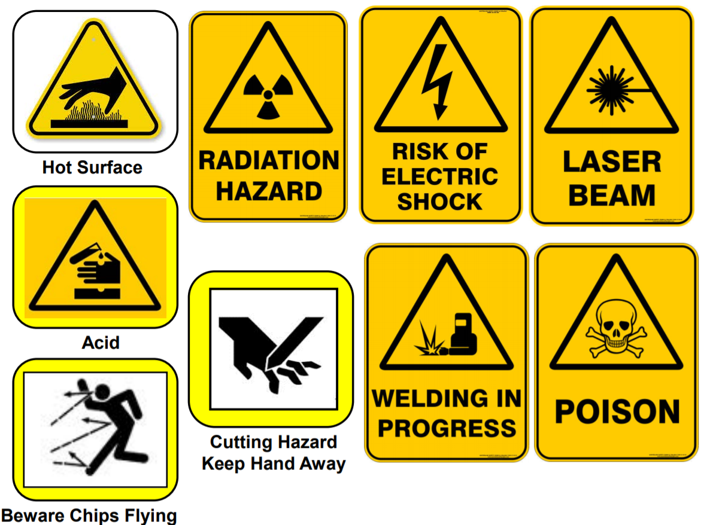
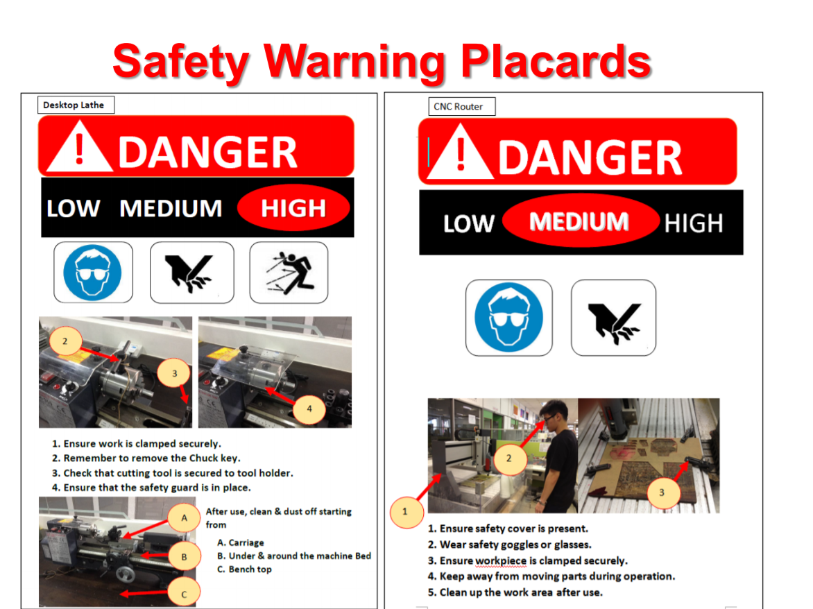
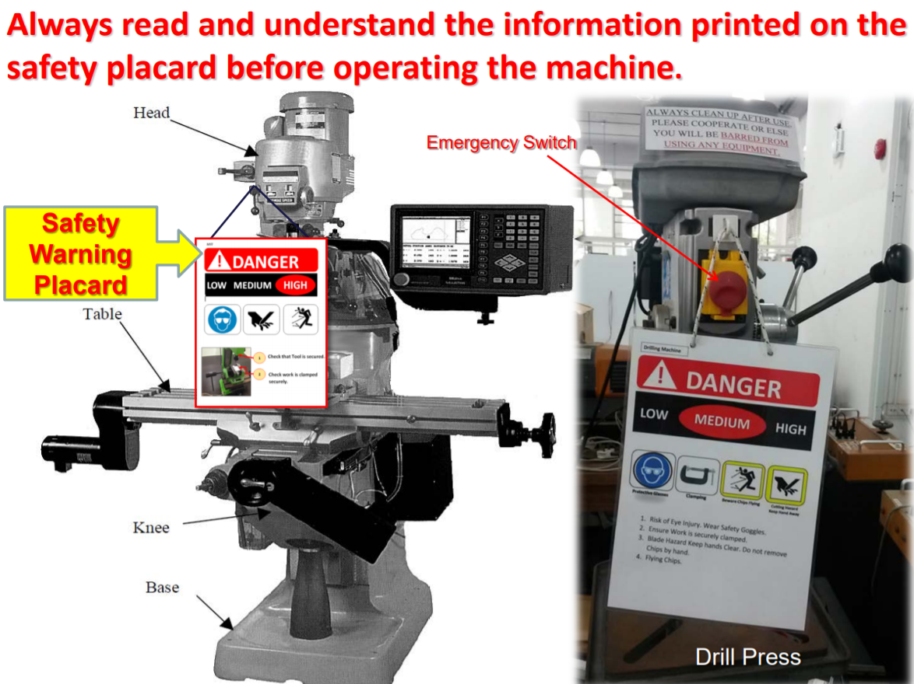
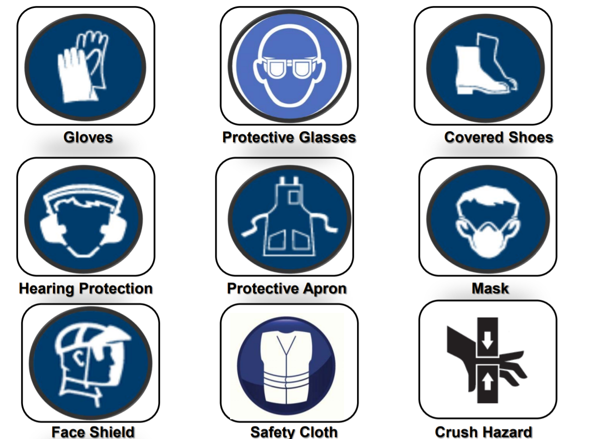
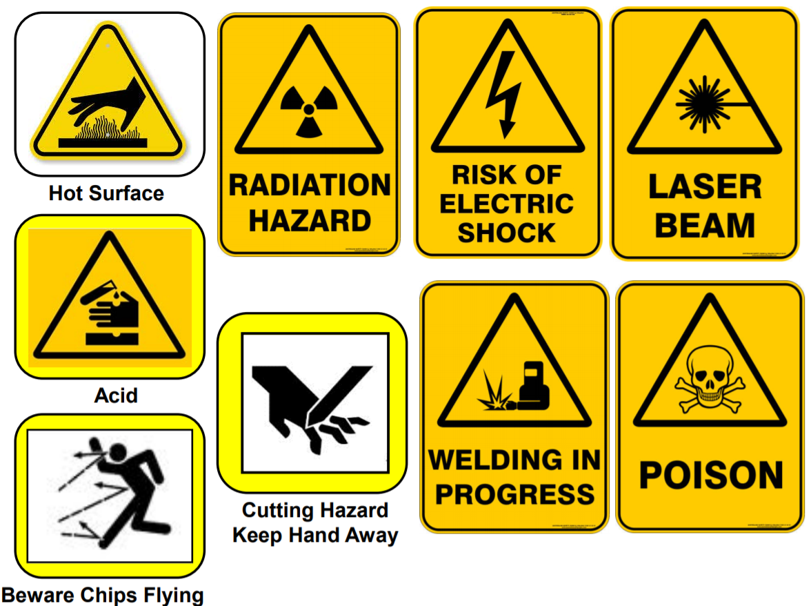
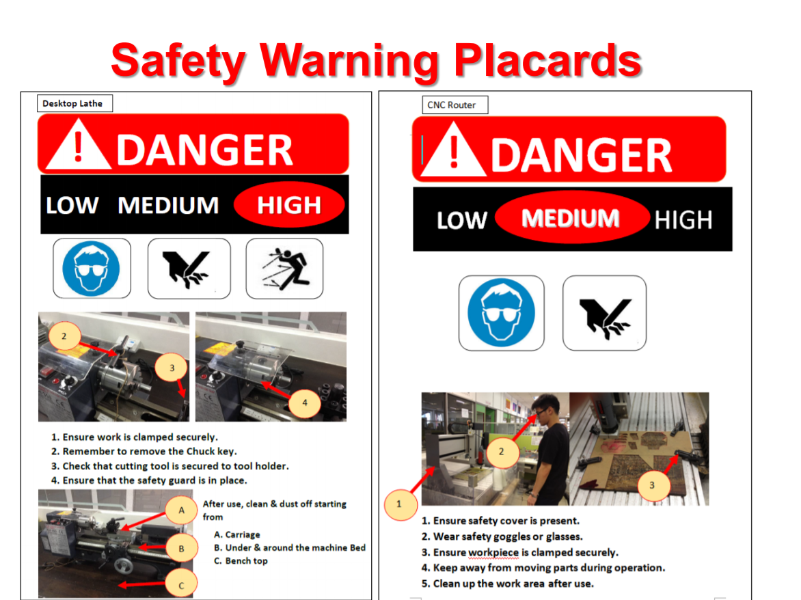
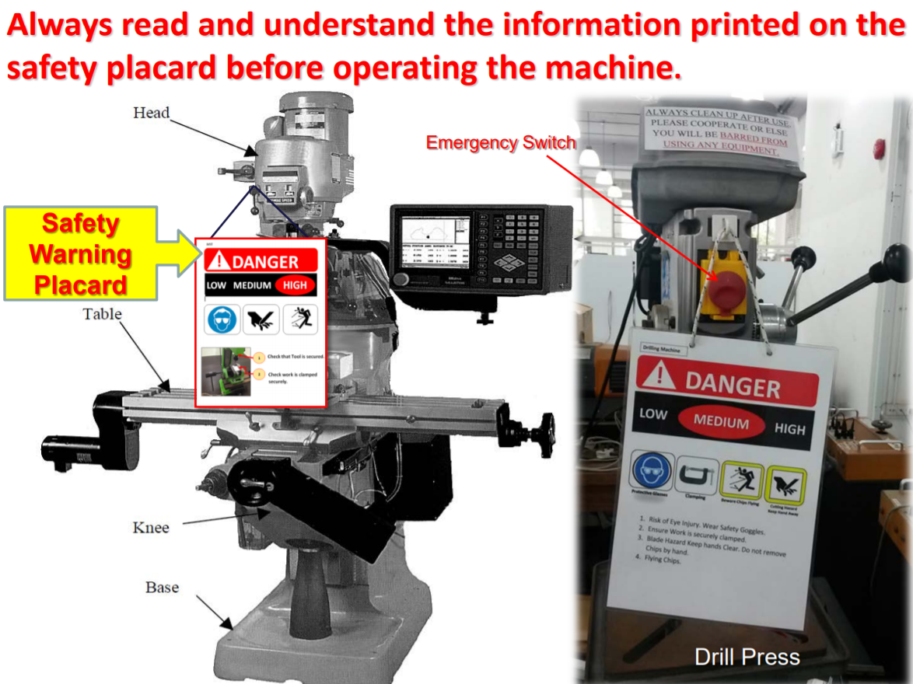

INTRODUCTION
Basics and for before entering the Fab Lab
Strategy of Safety Management in SP
- 1. Compulsory safety instruction & certification program for all students
- 2. Safety Infrastructure to be visible on shop floor of workshops
- 3. Safety patrol
- 4. Compulsory housekeeping by students after using the machines
Objectives
- 1. To understand WSH regulations in SP and the safe practices in Fab Lab/workshops
- 2. To be familiarise with the safety infrastructure in Fab Lab/Workshops and to know machines’ hazards
| No. |
Activities |
Est. Duration |
| 1 |
Briefing & Instructions on WSH safety |
75 mins |
| 2 |
Video / Reflections/ Case studies |
30 mins |
| 3 |
Break |
15 mins |
| 4 |
Safety Orientation of Workshop/Fab Lab |
20 mins |
| 5 |
Assessment (Quiz) |
20 mins |
| 6 |
Debrief & Retest |
20 mins |
|
|
180 min |
Safety Certificate Requirement
1. Upon attending the safety lessons, students will sit for a safety assessment
2. Those who pass the assessment will be certified & allowed to attend skill trainings & work in the workshop & Fab Lab
3. Failures must to sit for re-test
3 Principles of WSH Act Framework
- 1. Instilling greater industry ownership of Occupational Safety & Health Standards
Employers are responsible for developing safe work procedures to suit their own requirements
- 2. Reducing risk at source
by requiring all stakeholders to eliminate or minimize the risks they create at the workplace
- 3. Preventing accidents through heavier penalties
for poor safety and health management
Video
WSH Act 2006:
Website
4 Key Features of WSH Act
- 1. It places the responsibility for workplace safety on all stakeholders along lines of control at the workplace
- 2. It focuses on Workplace Safety & Health systems and outcomes, rather than merely on compliance
- 3. It facilitates effective enforcement through the issuance of remedial orders
- 4. It imposes higher penalties for non-compliance and risky behaviour

 


